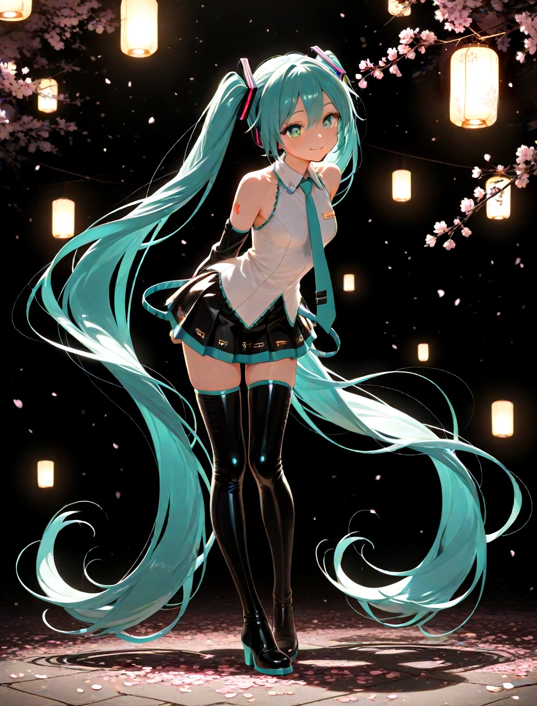
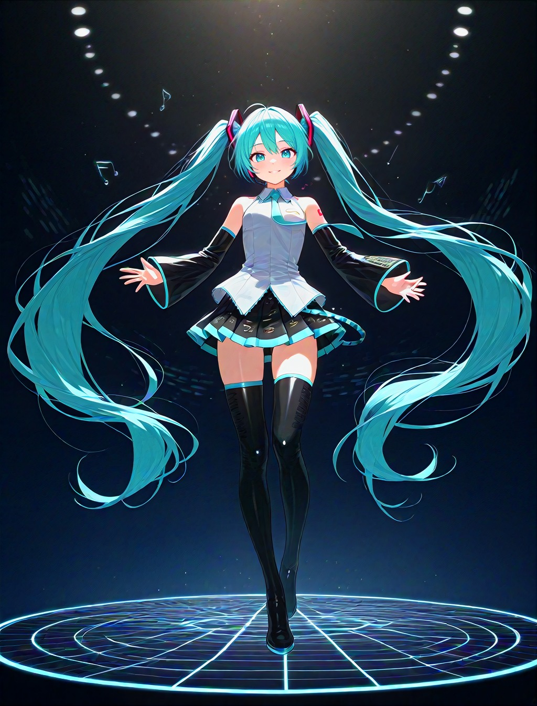
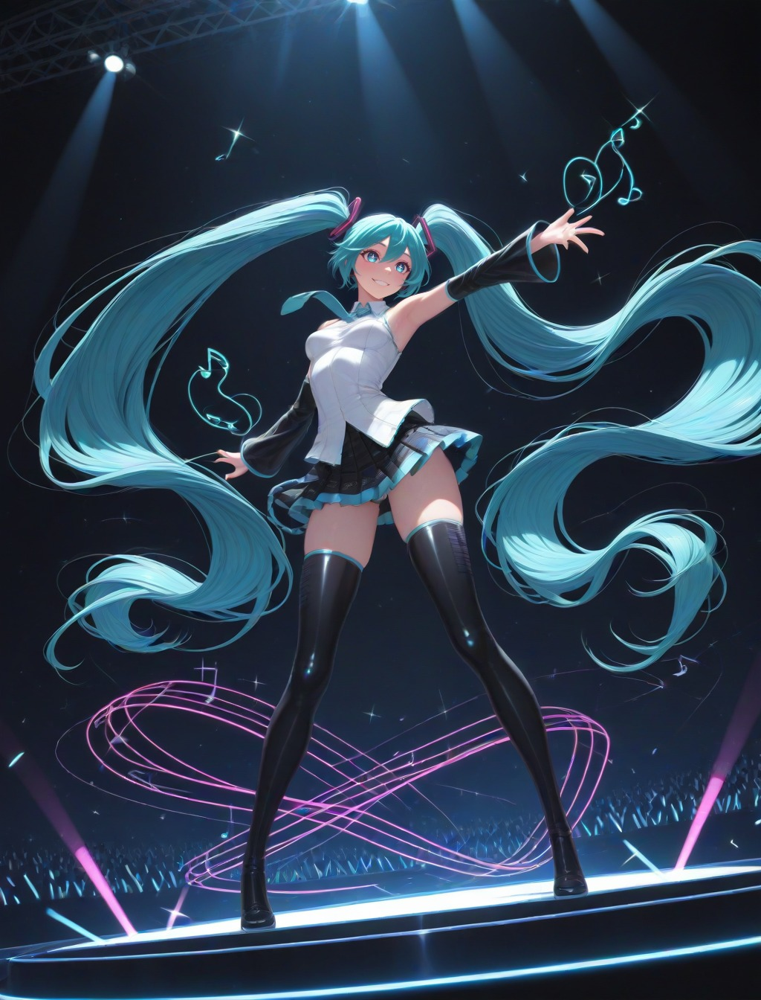
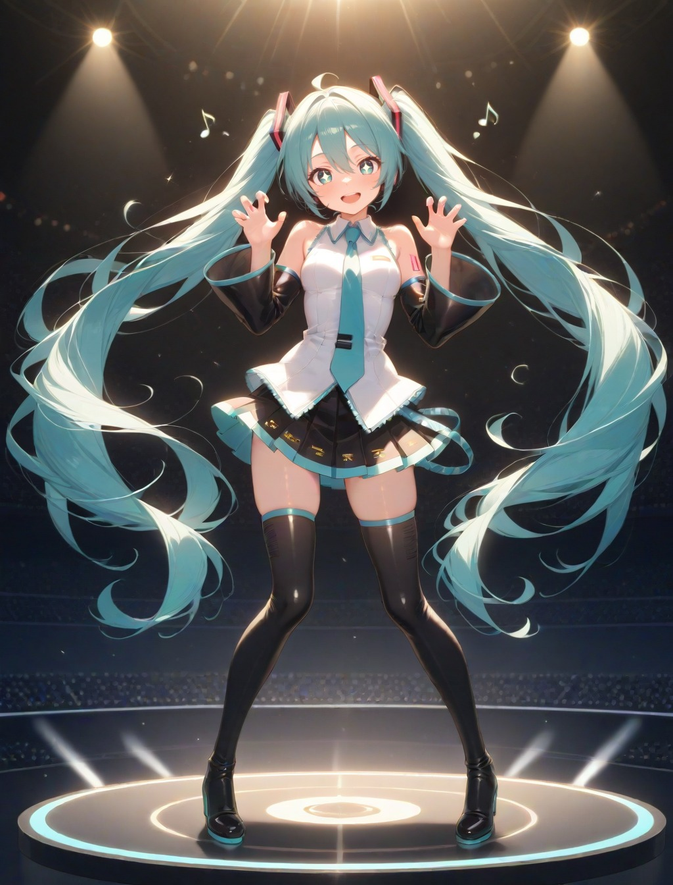

Verified PS4 Model Catalog
Every checkpoint below was benchmarked out-of-the-box on a PlayStation 4 Pro (Quiet 20 CU) using its exact built-in GarlicDiffusion v1.16 preset — no hidden LoRA stacks or manual cherry-picking. Only checkpoints that pass visual quality review ship on Hugging Face.
SDXL & Illustrious Checkpoints (Native 1024×1344)
Pre-quantized to Q8_0 (~2.6–3.7 GiB) with DMD2 4-step or Hyper-SD 8-step distillation for desktop-grade 1.38 MP anime illustrations in ~45–90 seconds on PS4 Pro (automatically scales to 768×1024 on Base PS4 / Slim).




SD 1.5 Checkpoints (Native 512×512 → 1080×1080 Real-ESRGAN)
Ultra-lightweight (~0.9–1.2 GiB, 1.54 GiB VRAM) — ideal for Base PS4 / PS4 Slim and fast iterations. GarlicDiffusion v1.16 generates every SD 1.5 render at anatomy-safe 512×512 with built-in EasyNegative TI + Auto Face Fix and auto-upscales to crisp 1080×1080.

Which Model Should You Download First?
🏆 #1 Overall (PS4 Pro)
WAI-Illustrious v17 DMD2 — Native 1024×1344 in 4 steps (CFG 1.0 LCM). Sharp eyes, clean hands, huge anime character knowledge, and ~1 minute renders in Quiet Mode.
⚡ #1 Fast & Base PS4 / Slim
MeinaMix V11 8-Step — Only 872 MiB on disk and 1.54 GiB VRAM. Generates crisp 512×512 → 1080×1080 anime art in ~35 seconds on Quiet 20 CU.
🎨 Alternative Art Styles
Try Plant Milk Walnut DMD2 (warm painterly), Nova Anime XL v18 DMD2 (vibrant cel-shaded), Illustrious Pencil v3.2 (sketch/artbook), or Hassaku XL v3.1 DMD2 (classic glossy anime).